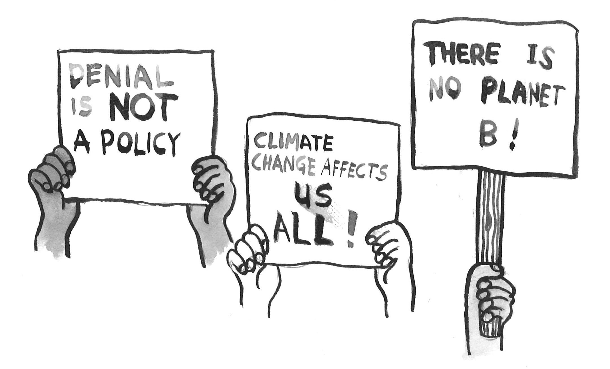

MAKE LOCAL POLITICS GREAT AGAIN
A Look at Climate Action from the Ground Up
by Paricha Duangtaweesub, Tymor Hamamsy, and Tayo Falase
by Paricha Duangtaweesub, Tymor Hamamsy, and Tayo Falase
Can 20 million votes change influence political action around climate change?
In a country of 325 million people, this may sounds like a silly question - yet this is exactly the question raised by the Environmental Voters Project, a non-profit whose research identified this potentially game-changing group of registered voters who ranked highly climate and environmental issues. In the 2014 midterm elections, only 4 million of these environmental voters voted.
If we are to believe that political change comes from starting small and voting locally, then these silent environmental voters will decide the future of climate policy. Are we seeing some promising signs for the 2018 midterm elections and beyond?
We think so.
"People all over this country, whether Republican or Democrat, are worried about our planet. Most people on both sides of the aisle believe climate change is happening. Now is the time that people will start vote for the issues that matter to them"
Protests give voice to the masses. They are a manifestation of grassroots activism and are fundamental to our democracy.
The first People’s Climate March took place in 2014 as a call to action, in response to the UN Climate Summit taking place New York City. While the estimated number of protestors vary, it was clear that there was a critical mass of environmentalists—defined in this story as people (voters) who rank highly environmental and climate priorities—who are willing to speak up and demand change from their political leaders.
On April 29th, 2017—one weekend after the March for Science—once again, the environmentalists flooded the streets of Washington, D.C. and over 300 other major cities in the US and around the world. This time, however, the atmosphere was that of resistance rather than solidarity.
The March coincided with Trump’s 100th day in office and it had very specific political decisions to rally against including (but definitely not limited to) his appointment of climate science skeptic Scott Pruitt to lead the Environmental Protection Agency, his signing of two executive orders approving the development of the Keystone XL Pipeline and bypass environmental regulations, and at the time of the March, he intent to pull out of the Paris Accord (Trump has since fulfilled that promise).
In perfect symmetry to the administration’s largely anti-climate actions, we see a diverse group of activists galvanized into taking their first steps alongside the old-timers.